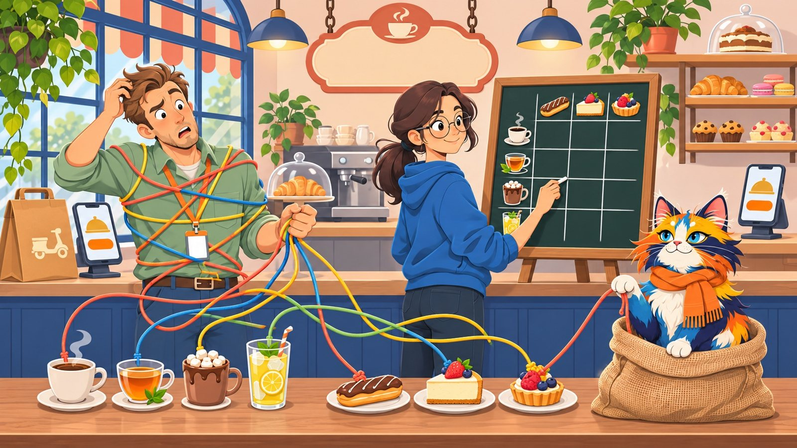
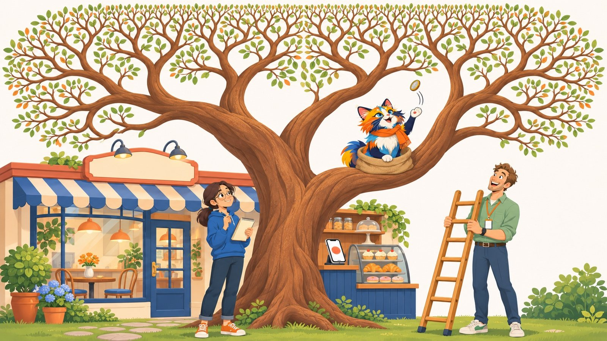
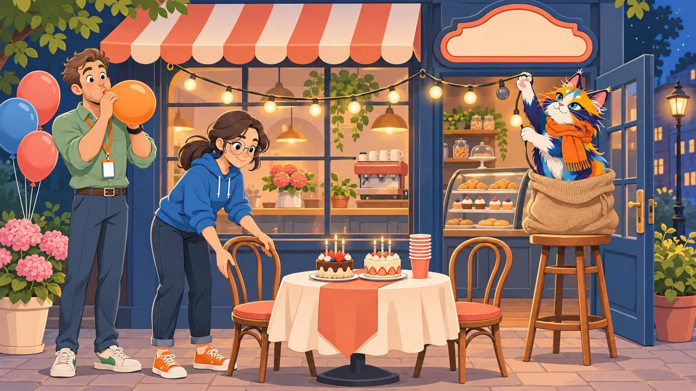

Каждый напиток сочетается с каждым десертом. На каждый из 4 напитков приходится одна и та же тройка десертов.
Сначала вспомним
Алиса выбирает десерт дня двумя монетками: два орла — эклер, две решки — тарт, разные — чизкейк. Какой десерт будет чаще?
Исходов четыре: ОО, ОР, РО, РР. «Разные» — два из них, поэтому чизкейк будет в половине дней, эклер и тарт — по четверти.
Котейка бросает синий и красный кубики. Сколько всего равновероятных исходов?
Таблица 6 × 6: шесть значений синего на шесть значений красного — 36 клеток, все равновероятны. Это и есть правило умножения, с которого начнётся шаг.
Шаг 3 из 9
Считаем исходы
После шага ты сможешь посчитать исходы деревом, правилом умножения и через C(n, k), не выписывая их все.

Кафе составляет меню комбо: напиток плюс десерт. Боб собрался выписать все варианты на доску, Котейка хочет ещё и коробку «три десерта на выбор». Сколько там вариантов — и можно ли посчитать, ничего не выписывая?
Каждый напиток с каждым десертом

Боб, продакт
Напитков четыре, десертов три. Сейчас соединю нитками все пары и пересчитаю.

Алиса, аналитик
Нитки не нужны. Нарисуй таблицу: строки — напитки, столбцы — десерты.
Выбери напиток, потом десерт — клетка комбо загорится. Собери все.
| эклер | чизкейк | тарт | |
|---|---|---|---|
| кофе | |||
| чай | |||
| какао | |||
| лимонад |
Собрано 0 комбо.
Не перечисляй — умножай
История
В штуках
4 строки по 3 клетки — 12 комбо. Без кофе — 3 строки по 3 клетки, 9 комбо. Если ещё выбирать размер стакана из двух вариантов, комбо станет 4 · 3 · 2 = 24.
Формула
N = n₁ · n₂ · … · nk
Словами: если выбор идёт по шагам, и на каждом шаге число вариантов не зависит от того, что выбрали раньше, — числа вариантов перемножаются.
Порядок шагов не важен: можно сначала выбрать десерт, потом напиток. Таблица повернётся набок, а клеток останется 3 · 4 = 12. С монетками то же самое: каждый бросок — шаг с двумя вариантами, поэтому у двух монеток 2 · 2 = 4 исхода, у трёх — 8, у десяти — 210 = 1024.
Умножение считает варианты, а не их популярность. Даже если эклер с лимонадом никто не берёт, в меню это всё равно одна клетка из 12.
Идея из лекций: Джозеф Блицштейн, курс Stat 110
Дерево из десяти бросков

Боб, продакт
Помнишь, в шаге 2 ровно пять орлов из десяти выпадали только в четверти серий? Я так и не понял почему.
Алиса, аналитик
Нарисуем дерево: каждый бросок раздваивает каждую ветку. После десяти бросков у дерева 1024 листа, и все равновероятны. Осталось посчитать листья ровно с пятью орлами.
Прикинь: какая доля из 1024 листьев содержит ровно пять орлов?
Напиши число — на следующей карточке вырастим дерево и посчитаем.
Конструктор дерева
Каждый клик — ещё один бросок: каждая ветка раздваивается. Выбери число орлов — подсветятся листья, где их ровно столько, и число в треугольнике справа.
Дерево исходов бросков монетки
Треугольник Паскаля: каждое число — сумма двух над ним
Три десерта: на полку или в коробку
В витрине 8 разных десертов. Боб выставляет три из них на полку «хит дня» — слева направо, порядок важен. Первый десерт — 8 вариантов, второй — 7, третий — 6: всего 8 · 7 · 6 = 336 полок.
Котейка же собирает три десерта в коробку — там порядок не важен. Одна и та же коробка {эклер, тарт, макарон} — это сразу шесть полок:
1эклер · тарт · макарон
2эклер · макарон · тарт
3тарт · эклер · макарон
4тарт · макарон · эклер
5макарон · эклер · тарт
6макарон · тарт · эклер
Шесть — это 3 · 2 · 1 = 3!: способы расставить три десерта по местам. Значит, коробок в шесть раз меньше, чем полок: 336/6 = 56.
Команда и скамейка
Сначала прикинь: в кафе 10 бариста. Чего больше — разных пар на смену или разных восьмёрок на субботний аврал?
История
Выбрать 8 бариста на аврал — то же самое, что выбрать двоих, кто останется дома. Каждой восьмёрке соответствует ровно одна «скамейка» из двух. С десертами так же: собрать коробку из 3 — то же, что выбрать 5, которые останутся на витрине.
В штуках
Пар из 10: 10 · 9/2 = 45. Восьмёрок: столько же скамеек из двух — тоже 45. Коробок из 3 десертов из 8: 8 · 7 · 6/3! = 56, и вариантов «пять на витрине» — тоже 56.
Формула
C(n, k) = n! / (k! · (n − k)!)
C(n, k) = C(n, n − k)
Словами: сколько способов выбрать k из n, если порядок не важен. Считаем полки и делим на k! — число порядков внутри одной коробки.
Ровно пять орлов из десяти — это выбор пяти бросков из десяти, на которых выпал орёл: C(10, 5) = 252. Отсюда 252/1024 = 24.6% из шага 2.
Идея из книги: Daniel Kahneman, «Thinking, Fast and Slow» — в опросе люди называли медианой 70 пар и 20 восьмёрок
Напиши C(n, k) сам
Допиши функцию без math.comb. Подсказка: перемножь k чисел n, n − 1, … и раздели на k!. Проверка прогонит её на нескольких парах и на симметрии.
Боб считает коробки
Боб, продакт
Коробка из трёх десертов, всего их восемь. Первый — 8 вариантов, второй — 7, третий — 6. Порядок в коробке не важен, значит, делю на два: 8 · 7 · 6/2 = 168 коробок!
Что не так в подсчёте Боба?
У трёх десертов 3! = 6 порядков, и все шесть дают одну коробку. Поэтому 336/6 = 56 коробок. «Делим на 2» верно только для пар.
Три задачи и как на них отвечать
Схема ответа: переформулируй → посчитай в штуках → запиши формулу → проверь симуляцией → скажи вывод одной фразой.
Котейка тасует колоду из 52 карт и снимает две верхние. Какова вероятность, что обе — тузы?
Переформулирую: сколько из всех равновероятных пар карт — пары тузов.
Способ 1, деревом: первая карта — туз в 4 случаях из 52; если так, вторая — туз в 3 из оставшихся 51. 4/52 · 3/51 = 12/2652 = 1/221.
Способ 2, через сочетания: пар из 52 карт C(52, 2) = 1326, пар тузов C(4, 2) = 6. 6/1326 = 1/221.
В штуках: из 221 000 раздач два туза сверху будут примерно в 1000, то есть около 0.45%.
Вывод: 1/221 ≈ 0.45%. Два способа сходятся — хорошая проверка на собеседовании.
На общем собрании 12 бариста, каждый пожал руку каждому. Сколько рукопожатий? А если людей n?
Переформулирую: рукопожатие — это пара людей, порядок в паре не важен.
В штуках: каждый из 12 жмёт 11 рук — 132 «пожатия со своей стороны», но каждое рукопожатие посчитано дважды. 132/2 = 66.
Формула: C(n, 2) = n(n − 1) / 2, C(12, 2) = 66.
Вывод: 66 рукопожатий. Число пар растёт примерно как квадрат числа людей — это пригодится в шаге 4, в задаче о днях рождения.
Из 10 бариста выбирают совет из трёх. Сколько вариантов? И чего больше: пар из 10 или восьмёрок из 10?
Переформулирую: выбрать 3 из 10 без порядка — внутри совета все равны.
В штуках: «полок» из трёх 10 · 9 · 8 = 720, у каждого совета 3! = 6 порядков, 720/6 = 120.
Формула: C(10, 3) = 10! / (3! · 7!) = 120.
Поворот: пар C(10, 2) = 45, восьмёрок C(10, 8) = 45 — поровну: выбрать восьмёрку = выбрать двоих, кто останется. Проверка — функция n_choose_k.
Вывод: 120 советов; пар и восьмёрок поровну, по 45.
Четыре вопроса про подсчёт
Что вероятнее при десяти бросках честной монетки: ОООООООООО или ОРРОРООРОР?
Конкретная цепочка из 10 бросков — одна ветка дерева из 1024. Пёстрых цепочек много, поэтому «какая‑нибудь пёстрая» выпадает часто, но каждая отдельная так же редка, как десять орлов.
Сколько разных исходов у десяти бросков монетки?
Каждый бросок умножает число веток на 2: 210 = 1024. «Сколько орлов» принимает всего 11 значений, но каждое собирает разное число цепочек.
Боб: «Эклер с лимонадом почти никто не берёт, так что 4 · 3 = 12 комбо — неверный подсчёт». Прав ли он?
Умножение отвечает на вопрос «сколько вариантов можно собрать». Сколько раз какой из них закажут — другой вопрос, про частоты.
Из 10 бариста выбирают троих на смену, внутри смены все равны. Сколько способов?
C(10, 3) = 720/3! = 120. Делим на число порядков внутри одной смены, а не на 2.
Не перечисляй — умножай
- Правило умножения: выбор по шагам — числа вариантов перемножаются, N = n₁ · n₂ · … · nk. 4 напитка × 3 десерта = 12 комбо; 10 бросков — 210 = 1024 исхода.
- Порядок важен, полка: n · (n − 1) · … · (n − k + 1). Все n вещей по местам — n!.
- Порядок не важен, коробка: C(n, k) = n! / (k! · (n − k)!) — полки делим на k!, а не на 2.
- Команда и скамейка: C(n, k) = C(n, n − k). Пар из 10 столько же, сколько восьмёрок, — 45.
- Ровно 5 орлов из 10: C(10, 5) / 210 = 252/1024 ≈ 24.6%.
- Любая конкретная цепочка из 10 бросков — 1 из 1024, пёстрая не вероятнее ООООООООО.
- Треугольник Паскаля: в строке n стоят C(n, 0), …, C(n, n); каждое число — сумма двух над ним.
- Правило умножения
- числа вариантов на шагах перемножаются; rule of product, multiplication principle
- Перестановки, n!
- способы расставить n вещей по порядку; permutations, «n factorial»
- Размещения
- упорядоченный выбор k из n; на собеседовании — k-permutations
- Сочетания, C(n, k)
- выбор k из n без порядка; combinations, «n choose k», binomial coefficient
- Треугольник Паскаля
- таблица всех C(n, k); Pascal's triangle
